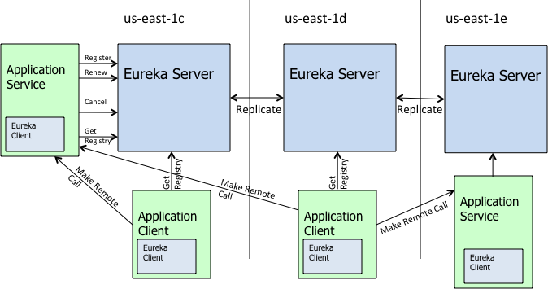

java_微服务01学习笔记¶
教程地址:跟我学Spring Cloud（Finchley版）
Spring Cloud系列教程：www.itmuch.com/spring-cloud/spring-cloud-index/#一、跟我学Spring-Cloud系列
01-开篇¶
02-构建分布式应用¶
Spring Boot/Spring Cloud时代后，应用开发基本遵循三板斧：
加依赖
加注解
写配置
创建Pom.xml
创建实体类
创建DAO：
创建Controller：
编写启动类：
ApplicationRunner init(UserRepository repository) 初始化了三条数据，
编写配置文件application.yml
03-监控：强大的Spring Boot Actuator¶
加依赖：actuator
加配置：
management:
endpoint:
health:
# 是否展示健康检查详情
show-details: always
04-服务注册与服务发现-原理剖析¶
服务发现组件应具备以下功能。
服务注册表：服务注册表是服务发现组件的核心（其实就是类似于上面的registry表），它用来记录各个微服务的信息，例如微服务的名称、IP、端口等。服务注册表提供查询API和管理API，查询API用于查询可用的微服务实例，管理API用于服务的注册和注销；
服务注册与服务发现：服务注册是指微服务在启动时，将自己的信息注册到服务发现组件上的过程。服务发现是指查询可用微服务列表及其网络地址的机制；
服务检查：服务发现组件使用一定机制定时检测已注册的服务，如发现某实例长时间无法访问，就会从服务注册表中移除该实例。
05-服务注册与服务发现-Eureka入门¶
Eureka是Netflix开源的服务发现组件，本身是一个基于REST的服务，包含Server和Client两部分，Spring Cloud将它集成在子项目Spring Cloud Netflix中。
编写Eureka Server：加依赖，加注解，写配置
依赖：spring-cloud-starter-netflix-eureka-server
注解:
@SpringBootApplication
@EnableEurekaServer
public class EurekaApplication {
public static void main(String[] args) {
SpringApplication.run(EurekaApplication.class, args);
}
}
配置：
server:
port: 8761
eureka:
client:
# 是否要注册到其他Eureka Server实例
register-with-eureka: false
# 是否要从其他Eureka Server实例获取数据
fetch-registry: false
service-url:
defaultZone: http://localhost:8761/eureka/
将应用注册到Eureka Server上：加依赖，加注解，写配置
依赖：spring-cloud-starter-netflix-eureka-client
注解：此处无变化。早期的版本（Dalston及更早版本）还需在启动类上添加注解@EnableDiscoveryClient 或@EnableEurekaClient ，从Edgware开始，该注解可省略。
配置:
spring:
application:
# 指定注册到eureka server上的服务名称，对于电影微服务，本系列将名称设为microservice-consumer-movie
name: microservice-provider-user
eureka:
client:
service-url:
# 指定eureka server通信地址，注意/eureka/小尾巴不能少
defaultZone: http://localhost:8761/eureka/
instance:
# 是否注册IP到eureka server，如不指定或设为false，那就会注册主机名到eureka server
prefer-ip-address: true
06-服务注册与服务发现-Eureka深入¶
Region & Availability Zone
Region表示AWS中的地理位置，例如us-east-1、us-east-2、eu-west-1等；
每个Region都有多个Availability Zone，彼此内网打通；
各个Region之间完全隔离，彼此内网不打通；
AWS通过这种方式实现了最大的容错和稳定性。
Spring Cloud中，默认使用的Region是us-east-1 。非AWS环境下，可将将Region理解为内网没有打通的机房，将Availability Zone理解成相同机房的不同机架（内网打通）。

Eureka包含两个组件：Eureka Server 和 Eureka Client，它们的作用如下：
Eureka Server提供服务发现的能力，各个微服务启动时，会向Eureka Server注册自己的信息（例如IP、端口、微服务名称等），Eureka Server会存储这些信息； Eureka Client是一个Java客户端，用于简化与Eureka Server的交互；
微服务启动后，会周期性（默认30秒）地向Eureka Server发送心跳以续约自己的“租期”；
如果Eureka Server在一定时间内没有接收到某个微服务实例的心跳，Eureka Server将会注销该实例（默认90秒）；
默认情况下，Eureka Server同时也是Eureka Client。多个Eureka Server实例，互相之间通过增量复制的方式，来实现服务注册表中数据的同步。Eureka Server默认保证在90秒内，Eureka Server集群内的所有实例中的数据达到一致（从这个架构来看，Eureka Server所有实例所处的角色都是对等的，没有类似Zookeeper、Consul、Etcd等软件的选举过程，也不存在主从，所有的节点都是主节点。Eureka官方将Eureka Server集群中的所有实例称为“对等体（peer）”）
Eureka Client会缓存服务注册表中的信息。这种方式有一定的优势——首先，微服务无需每次请求都查询Eureka Server，从而降低了Eureka Server的压力；其次，即使Eureka Server所有节点都宕掉，服务消费者依然可以使用缓存中的信息找到服务提供者并完成调用。
综上，Eureka通过心跳检查、客户端缓存等机制，提高了系统的灵活性、可伸缩性和可用性。
编写高可用Eureka Server
下面来编写一个双节点Eureka Server集群。编写这个集群非常简单，只需修改单实例Eureka Server的配置即可：
修改vim /etc/hosts：
# 添加如下内容
127.0.0.1 peer1 peer2
配置:
spring:
application:
name: microservice-discovery-eureka-ha
---
spring:
profiles: peer1 # 指定profile=peer1
server:
port: 8761
eureka:
instance:
hostname: peer1 # 指定当profile=peer1时，主机名是peer1
client:
serviceUrl:
defaultZone: http://peer2:8762/eureka/ # 将自己注册到peer2这个Eureka上面去
---
spring:
profiles: peer2
server:
port: 8762
eureka:
instance:
hostname: peer2
client:
serviceUrl:
defaultZone: http://peer1:8761/eureka/
如果两个Eureka Server实例在同一台机器上启动，那么配置hosts的这一步不能少。原因：Eureka Server对端口是不敏感的，这意味着，如果直接用IP的形式（例如地址写成http://127.0.0.1:8761/eureka/）相互注册，Eureka Server误认为两个Eureka Server实例是一个实例——这会造成Eureka Server首页显示不正常等一系列问题！！
编写Eureka Server集群的简写方式：
spring:
application:
name: microservice-discovery-eureka-ha
eureka:
client:
serviceUrl:
defaultZone: http://peer2:8762/eureka/,http://peer1:8761/eureka/
---
spring:
profiles: peer1
server:
port: 8761
eureka:
instance:
hostname: peer1
---
spring:
profiles: peer2
server:
port: 8762
eureka:
instance:
hostname: peer2
RESTful API
举例:rest-api-test.xml
<instance>
<instanceId>itmuch:rest-api-test:9000</instanceId>
<hostName>itmuch</hostName>
<app>REST-API-TEST</app>
<ipAddr>127.0.0.1</ipAddr>
<vipAddress>rest-api-test</vipAddress>
<secureVipAddress>rest-api-test</secureVipAddress>
<status>UP</status>
<port enabled="true">9000</port>
<securePort enabled="false">443</securePort>
<homePageUrl>http://127.0.0.1:9000/</homePageUrl>
<statusPageUrl>http://127.0.0.1:9000/info</statusPageUrl>
<healthCheckUrl>http://127.0.0.1:9000/health</healthCheckUrl>
<dataCenterInfo class="com.netflix.appinfo.InstanceInfo$DefaultDataCenterInfo">
<name>MyOwn</name>
</dataCenterInfo>
</instance>
RESTful API的意义
你可能会问：我们不是已经有Eureka Client了吗？谁闲着没事再去用RESTful API啊？
要知道，微服务的优势之一就是允许使用异构的技术、异构的语言甚至异构的平台解决你想解决的问题。
举个例子，如果你有一个系统，一部分是Spring Cloud构建的，一部分是用世界上最好的语言PHP写的！但是呢，你希望Java应用与PHP应用之间的通信也能享受服务发现所带来的好处，此时就可编写一个基于PHP的Eureka Client，将PHP应用也注册到Eureka Server！
事实上，前文说的Eureka Client不过是一个用Jersey 1.x封装了RESTful API的Jar包而已。
07-Ribbon入门¶
依赖:加依赖：由于spring-cloud-starter-netflix-eureka-client 已经包含spring-cloud-starter-netfilx-ribbon ，故而无需额外添加依赖。 注解：
@Bean
@LoadBalanced
public RestTemplate restTemplate() {
return new RestTemplate();
}
调用:
@GetMapping("/users/{id}")
public User findById(@PathVariable Long id) {
// 这里用到了RestTemplate的占位符能力
User user = this.restTemplate.getForObject(
"http://microservice-provider-user/users/{id}",
User.class,
id
);
// ...电影微服务的业务...
return user;
}
将请求的目标服务改成了http://microservice-provider-user/users/{id} ，也就是http://{目标服务名称}/{目标服务端点} 的形式，Ribbon会自动在实际调用时，将目标服务名替换为该服务的IP和端口。
原来: this.restTemplate.getForObject(“http://localhost:8000/users/{id}”, User.class, id);
这里的目标服务名称，在Ribbon里叫虚拟主机名 ，主机名是不能包含_ 等特殊字符的——这意味着，一般不建议配置spring.application.name = xxx_xxx
08-Ribbon深入¶
内置负载均衡规则
Ribbon配置自定义【细粒度配置】：
方式1、代码配置方式，
方式2、属性配置方式【推荐】
代码示例
user:
ribbon:
NFLoadBalancerRuleClassName: com.netflix.loadbalancer.RandomRule
09-Feign¶
取代restTemplate
加依赖：
加注解：启动类上添加@EnableFeignClients ；
编写Feign Client
@FeignClient(name = "microservice-provider-user")
public interface UserFeignClient {
@GetMapping("/users/{id}")
User findById(@PathVariable("id") Long id);
}
改control
public class MovieController {
@Autowired
private UserFeignClient userFeignClient;
}
10-Feign深入¶
11-Feign常见问题总结¶
12-微服务容错三板斧¶
应用容错三板斧
超时机制:一旦超时，就释放资源。由于释放资源速度较快，应用就不会那么容易被拖死。
舱壁模式:软件世界里的仓壁模式可以这样理解：M类使用线程池1，N类使用线程池2，彼此的线程池不同，并且为每个类分配的线程池较小，
断路器:实时监测应用，如果发现在一定时间内失败次数/失败率达到一定阈值，就“跳闸”，断路器打开——此时，请求直接返回，而不去调用原本调用的逻辑。
13-通用方式使用Hystrix¶
加依赖：
<dependency>
<groupId>org.springframework.cloud</groupId>
<artifactId>spring-cloud-starter-netflix-hystrix</artifactId>
</dependency>
加注解：在启动类上添加@EnableCircuitBreaker 注解。
使用：
@HystrixCommand(fallbackMethod = "findByIdFallback")
@GetMapping("/users/{id}")
public User findById(@PathVariable Long id) {
// 这里用到了RestTemplate的占位符能力
User user = this.restTemplate.getForObject(
"http://microservice-provider-user/users/{id}",
User.class,
id
);
// ...电影微服务的业务...
return user;
}
public User findByIdFallback(Long id) {
return new User(id, "默认用户", "默认用户", 0, new BigDecimal(1));
}
由代码可知，只需使用@HystrixCommand 注解，就可保护该API。这里的”保护“，其实带有三层含义——”超时机制“、”仓壁模式“、”断路器“！
16-Zuul¶
Zuul是Netflix开源的微服务网关，它可以和Eureka、Ribbon、Hystrix等组件配合使用。Zuul的核心是一系列的过滤器，这些过滤器帮助我们完成以下功能：
身份认证与安全：识别每个资源的验证要求，并拒绝那些与要求不符的请求；
审查与监控：在边缘位置追踪有意义的数据和统计结果，从而为我们带来精确的生产视图；
动态路由：动态地将请求路由到不同的后端集群；
压力测试：逐渐增加指向集群的流量，以了解性能；
负载分配：为每一种负载类型分配对应容量，并弃用超出限定值的请求；
静态响应处理：在边缘位置直接建立部分响应，从而避免其转发到内部集群；
多区域弹性：跨越AWS Region进行请求路由，旨在实现ELB（Elastic Load Balancing）使用的多样化；以及让系统的边缘更贴近系统的使用者。
加依赖
加注解：@EnableZuulProxy
写配置：我们编写了一个Zuul，并将其注册到了Eureka上。